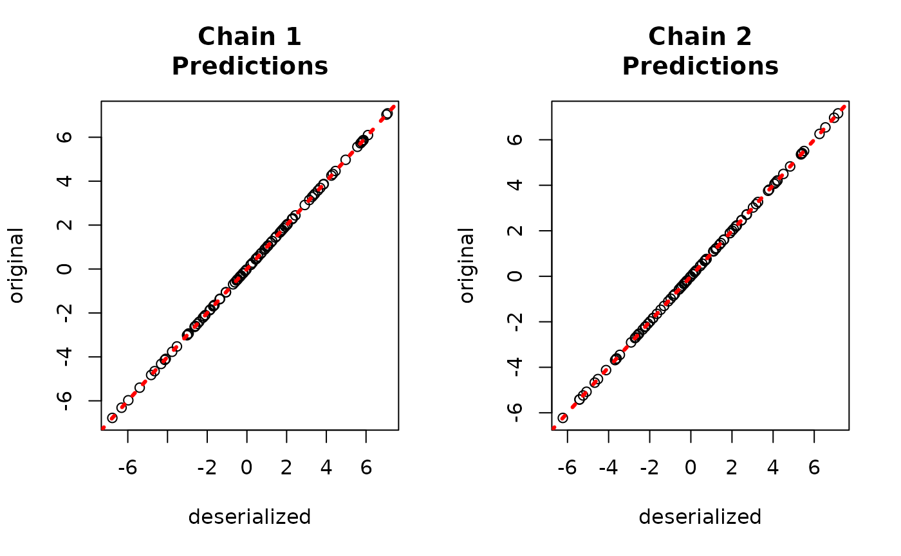
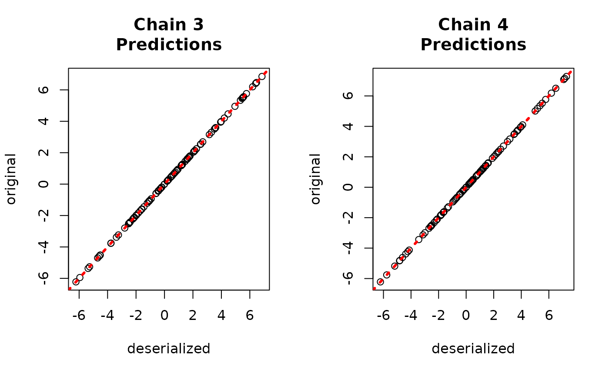
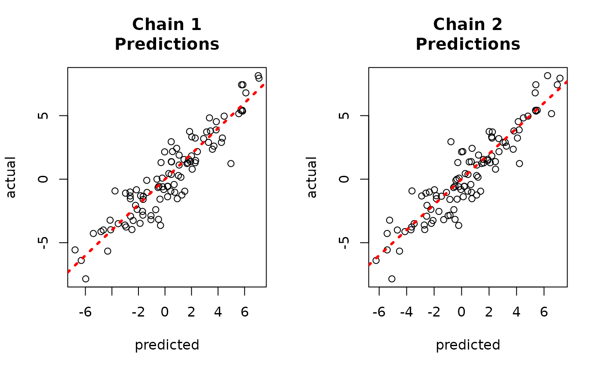
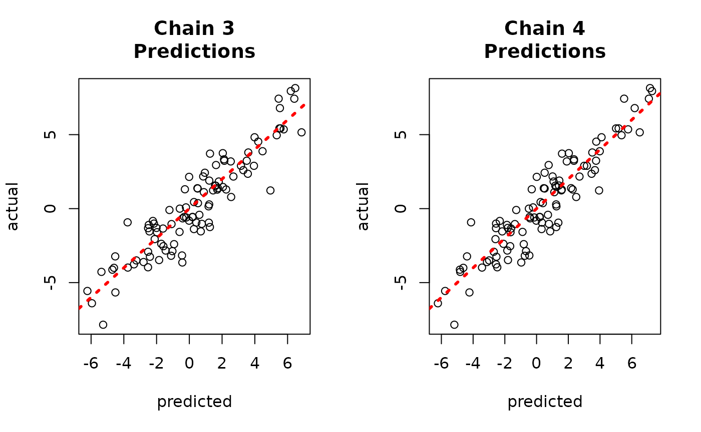

Running Multiple Chains (Sequentially or in Parallel) in StochTree
MultiChain.RmdMotivation
Mixing of an MCMC sampler is a perennial concern for complex Bayesian models, and BART is no exception. On common way to address such concerns is to run multiple independent “chains” of an MCMC sampler, so that if each chain gets stuck in a different region of the posterior, their combined samples attain better coverage of the full posterior.
This idea works with the classic “from-root” MCMC sampler of Chipman, George, and McCulloch (2010), but a key insight of He and Hahn (2023) is that the XBART algorithm may be used to warm-start initialize multiple chains of the BART MCMC sampler.
Operationally, the above two approaches have the same implementation
(setting num_gfr > 0 if warm-start initialization is
desired), so this vignette will demonstrate how to run a multi-chain
sampler sequentially or in parallel.
To begin, load stochtree and other necessary
packages
Demo 1: Supervised Learning
Data Simulation
Simulate a simple partitioned linear model
# Generate the data
n <- 500
p_x <- 10
p_w <- 1
snr <- 3
X <- matrix(runif(n*p_x), ncol = p_x)
W <- matrix(runif(n*p_w), ncol = p_w)
f_XW <- (
((0 <= X[,1]) & (0.25 > X[,1])) * (-7.5*W[,1]) +
((0.25 <= X[,1]) & (0.5 > X[,1])) * (-2.5*W[,1]) +
((0.5 <= X[,1]) & (0.75 > X[,1])) * (2.5*W[,1]) +
((0.75 <= X[,1]) & (1 > X[,1])) * (7.5*W[,1])
)
noise_sd <- sd(f_XW) / snr
y <- f_XW + rnorm(n, 0, 1)*noise_sd
# Split data into test and train sets
test_set_pct <- 0.2
n_test <- round(test_set_pct*n)
n_train <- n - n_test
test_inds <- sort(sample(1:n, n_test, replace = FALSE))
train_inds <- (1:n)[!((1:n) %in% test_inds)]
X_test <- as.data.frame(X[test_inds,])
X_train <- as.data.frame(X[train_inds,])
W_test <- W[test_inds,]
W_train <- W[train_inds,]
y_test <- y[test_inds]
y_train <- y[train_inds]Sampling Multiple Chains Sequentially
Define some high-level parameters, including number of chains to run and number of samples per chain. Here we run 4 independent chains with 5 warm-start iterations and 100 MCMC iterations each.
num_chains <- 4
num_gfr <- 10
num_burnin <- 0
num_mcmc <- 100
num_trees <- 100Run the sampler, storing the resulting BART objects in a list
bart_models <- list()
bart_params <- list(sample_sigma_global = T, sample_sigma_leaf = T, num_trees_mean = num_trees)
for (i in 1:num_chains) {
bart_models[[i]] <- stochtree::bart(
X_train = X_train, W_train = W_train, y_train = y_train, X_test = X_test,
W_test = W_test, num_gfr = num_gfr, num_burnin = num_burnin, num_mcmc = num_mcmc,
params = bart_params
)
}Now, if we want to combine the forests from each of these BART models into a single forest, we can do so as follows
json_string_list <- list()
for (i in 1:num_chains) {
json_string_list[[i]] <- saveBARTModelToJsonString(bart_models[[i]])
}
combined_bart <- createBARTModelFromCombinedJsonString(json_string_list)We can predict from this combined forest as follows
yhat_combined <- predict(combined_bart, X_test, W_test)$y_hatCompare to the original values
par(mfrow = c(1,2))
for (i in 1:num_chains) {
offset <- (i-1)*num_mcmc
inds_start <- offset + 1
inds_end <- offset + num_mcmc
plot(rowMeans(bart_models[[i]]$y_hat_test),
rowMeans(yhat_combined[,inds_start:inds_end]),
xlab = "original", ylab = "deserialized",
main = paste0("Chain ", i, "\nPredictions"))
abline(0,1,col="red",lty=3,lwd=3)
}Sampling Multiple Chains in Parallel
We use the same high-level parameters as in the sequential demo.
num_chains <- 4
num_gfr <- 10
num_burnin <- 0
num_mcmc <- 100
num_trees <- 100In order to run this sampler in parallel, a parallel backend must be registered in your R environment. The code below will register a parallel backend with access to as many cores are available on your machine. Note that we do not evaluate the code snippet below in order to interact nicely with CRAN / Github Actions environments.
ncores <- parallel::detectCores()
cl <- makeCluster(ncores)
registerDoParallel(cl)Note that the bartmodel object contains external
pointers to forests created by the stochtree shared object,
and when stochtree::bart() is run in parallel on
independent subprocesses, these pointers are not generally accessible in
the session that kicked off the parallel run.
To overcome this, you can return a JSON representation of a
bartmodel in memory and combine them into a single
in-memory bartmodel object.
The first step of this process is to run the sampler in parallel, storing the resulting BART JSON strings in a list.
bart_model_outputs <- foreach (i = 1:num_chains) %dopar% {
random_seed <- i
bart_params <- list(sample_sigma_global = T, sample_sigma_leaf = T,
num_trees_mean = num_trees, random_seed = random_seed)
bart_model <- stochtree::bart(
X_train = X_train, W_train = W_train, y_train = y_train, X_test = X_test, W_test = W_test,
num_gfr = num_gfr, num_burnin = num_burnin, num_mcmc = num_mcmc, params = bart_params
)
bart_model_string <- stochtree::saveBARTModelToJsonString(bart_model)
y_hat_test <- bart_model$y_hat_test
list(model=bart_model_string, yhat=y_hat_test)
}
#> Warning: executing %dopar% sequentially: no parallel backend registeredClose the parallel cluster (not evaluated here, as explained above).
stopCluster(cl)Now, if we want to combine the forests from each of these BART models into a single forest, we can do so as follows
bart_model_strings <- list()
bart_model_yhats <- matrix(NA, nrow = length(y_test), ncol = num_chains)
for (i in 1:length(bart_model_outputs)) {
bart_model_strings[[i]] <- bart_model_outputs[[i]]$model
bart_model_yhats[,i] <- rowMeans(bart_model_outputs[[i]]$yhat)
}
combined_bart <- createBARTModelFromCombinedJsonString(bart_model_strings)We can predict from this combined forest as follows
yhat_combined <- predict(combined_bart, X_test, W_test)$y_hatCompare average predictions from each chain to the original predictions.
par(mfrow = c(1,2))
for (i in 1:num_chains) {
offset <- (i-1)*num_mcmc
inds_start <- offset + 1
inds_end <- offset + num_mcmc
plot(rowMeans(yhat_combined[,inds_start:inds_end]), bart_model_yhats[,i],
xlab = "deserialized", ylab = "original",
main = paste0("Chain ", i, "\nPredictions"))
abline(0,1,col="red",lty=3,lwd=3)
}
And to the true values.
par(mfrow = c(1,2))
for (i in 1:num_chains) {
offset <- (i-1)*num_mcmc
inds_start <- offset + 1
inds_end <- offset + num_mcmc
plot(rowMeans(yhat_combined[,inds_start:inds_end]), y_test,
xlab = "predicted", ylab = "actual",
main = paste0("Chain ", i, "\nPredictions"))
abline(0,1,col="red",lty=3,lwd=3)
}